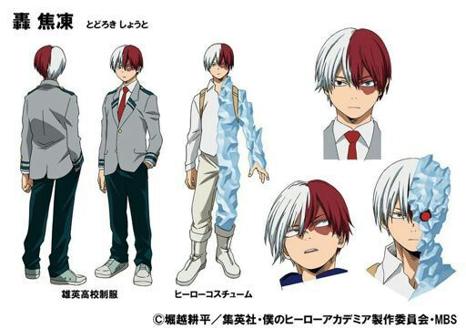

Шото Тодороки
Шото Тодороки
- Пол: ♂ Мужской
- Рост: 176 см.
- Возраст: 16
- Группа крови: O(|)
- Родился в: Японии
Шото Тодороки (Todoroki Shouto) — ученик класса 1-A академии Юэй, один из учеников, что поступили по официальным рекомендациям. Он тренируется чтобы стать Профессиональным Героем. Он также является сыном героя Старателя и одним из главных героев манги.
Хочешь, чтобы все это закончилось... тогда поднимайся на ноги!!! Я тоже должен... сказать тебе то, что навсегда тебя изменит! Всегда помни о том, кем мечтаешь стать!!!
Внешность
Шото — подросток среднего роста. У него волосы средней длины, которые равномерно распределены между белым на правой стороне и красным на левой, что заметно отражает его Причуду. У него ожоговый шрам на левом глазу, который он получил в детстве. Также у него гетерохромия. Левый у него глаз бирюзовый, а правый серый. В нескольких эпизодах видно, что у него впечатляющее телосложение, отмеченное самим Кохеем Хорикоши в профиле манги Шото. Несколько девушек утверждали, что он невероятно красив, даже несмотря на шрам. Мина даже утверждала, что он самый красивый парень в классе. Во время нападения девушки на иллюзию в виде Тодороки, она сразу сдалась, стоило лже-Шото мило улыбнуться. В школе он носит обычную форму Юэй, заменяя лишь коричневые туфли на серо-голубые кроссовки.

В своём первоначальном геройском костюме Шото носит простую белую рубашку, белые брюки, белые сапоги и золотой боевой жилет. Левую сторону его туловища и головы покрывает лёд как способ отбросить другую часть его причуды.
Новый геройский костюм Шото состоит тёмно-синей рубашки с рукавами до локтей и высокого воротника, серого ожерелья, мешковатых брюк того же цвета, что и рубашка, металлического боевого жилета и белых сапог с серой линий по центру каждой из них и с серыми подошвами. Он также носит пояс с маленькими металлическими капсулами, содержащими медикаменты.
Личность
Шото холодный и отчужденный. Его характер протекает из его сурового воспитания. Он довольно опытный в бою, будучи в состоянии оставаться спокойным даже во время борьбы с настоящими злодеями. Хоть он и жесток в бою, все его действия основаны на этике героизма, поэтому он всегда оставляет своих противников замороженными, а не убивает их. После событий Спортивного фестиваля Шото все еще имеет отдаленное отношение к другим, но он стал заметно более общительным и добрым, даже приобрел чувство юмора и иногда улыбается. У Шото было глубокое отвращение к его огненной стороне, которую он унаследовал от отца, поскольку она символизировала ненависть его отца по отношению к нему и его матери, а также то, что он родился, чтобы быть инструментом. Поэтому Шото решил полагаться только на силу льда и не использовать свою огневую мощь в бою, что даже начал прикрывать свою левую руку и торс льдом в своем первом костюме героя, символизируя отречение от своего отца.
Зачастую Шото чувствовал себя обеспокоенным самим присутствием отца, а разговаривая с ним, он едва мог сдержать гнев. Во время битвы с Изуку Мидорией на Спортивном фестивале речь Изуку пробудил у Шото воспоминание о поддерживающих его матери словах, и впервые он использовал свою огненную сторону в бою. После битвы у Шото были смешанные чувства по поводу использования левой стороны, но после примирения с матерью, Шото в конце концов смирился с её использованием. Несмотря на шрамы, причиненные ему матерью, когда он был маленьким ребенком, Шото не демонстрирует никаких тяжёлых чувств к своей матери, более того он часто навещает её после Спортивного фестиваля. Шото берёт пример и вдохновение с Всемогущего, как и Изуку с Бакуго, да и все трое имеют очень приятные воспоминания о просмотре геройств символа мира по телевизору.
Тем не менее, Шото по-прежнему питает злобу к отцу, даже если он уважает способность своего отца как героя, он признаёт, что такая ненависть не может исчезнуть так легко. Будучи лишённым нормального детства, потому что отец реализовывал свои эгоистичные амбиции по воспитанию героя, который бы превзошёл Всемогущего, Шото всё ещё имеет различные психологические травмы. По итогу, из-за влияния Изуку и попытки перебороть эти травмы, Шото всё же стремится стать героем, но не идя по тому же пути, что и его отец.
В то же самое время Шото показал, что он беспокоится за жизнь своего отца. В настоящее время, когда Старатель пытается улучшить отношение со своей семьёй, Шото принимает его исправление, но относится к этому с опаской и, конечно же, не может полностью простить его.
Несмотря на свое спокойное поведение, Шото был довольно высокомерным до боя с Изуку, что в сочетании с его личными наклонностями иногда заставляло его проявлять инициативу, не принимая во внимание мнения других, демонстрируя уверенность в том, что он может справиться с любыми препятствиями собственными силами. В своей борьбе против Айзавы, он не смог скооперироваться с Момо Яойорозу и спланировать все заранее, что привело их к ловушке. Но даже так Шото моментально понимает свою ошибку и начинает прислушивается к девушке, интересуясь её мнением. В своих первых боях и на Спортивном фестивале он показал абсолютную уверенность в том, что одной его ледяной стороны будет достаточно, чтобы дать ему победу.
Причуда
 Шото был показан как самый сильный студент в классе 1-A. Даже после победы над ним на спортивном фестивале Кацуки Бакуго признает, что Тодороки выиграл бы бой, если бы он использовал всю свою силу. Шото смог легко одолеть злодеев в зоне оползня в одиночку и продемонстрировал быстрое мышление и хорошую подготовку во время Спортивного фестиваля. Во время матча с Изуку Мидорией один из зрителей заявил, что Шото уже был сильнее большинства Профессиональных героев.
Шото был показан как самый сильный студент в классе 1-A. Даже после победы над ним на спортивном фестивале Кацуки Бакуго признает, что Тодороки выиграл бы бой, если бы он использовал всю свою силу. Шото смог легко одолеть злодеев в зоне оползня в одиночку и продемонстрировал быстрое мышление и хорошую подготовку во время Спортивного фестиваля. Во время матча с Изуку Мидорией один из зрителей заявил, что Шото уже был сильнее большинства Профессиональных героев.
Его способности вытекают из его тяжёлого детства, потому что с самых ранних лет его тренировал Герой №1 Старатель. Именно поэтому он смог поступить в Юэй по рекомендации и занял второе место как на Тесте на понимание причуды, так и на Спортивном фестивале.